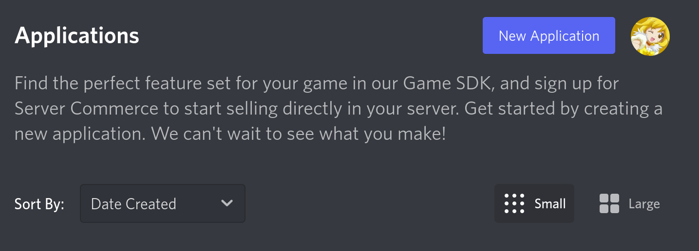
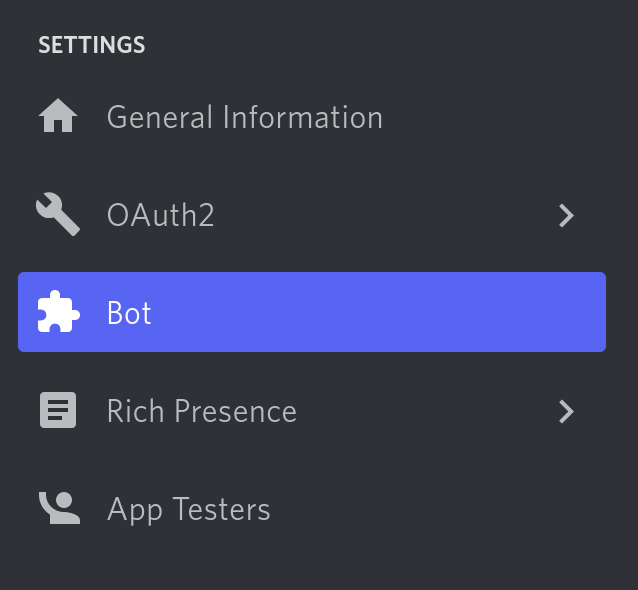
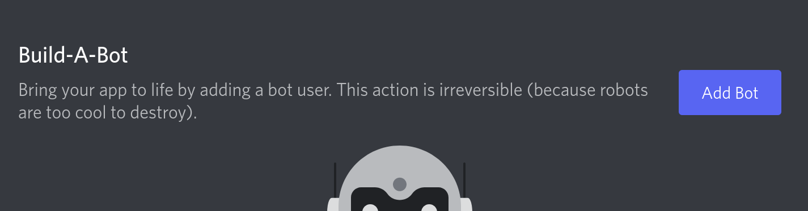
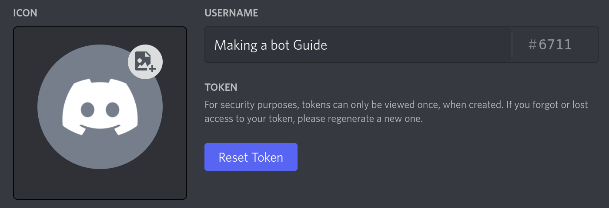
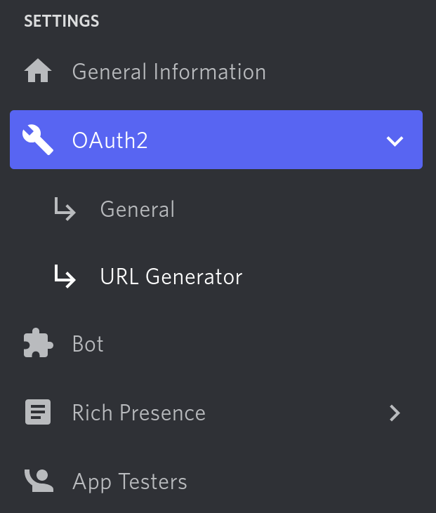
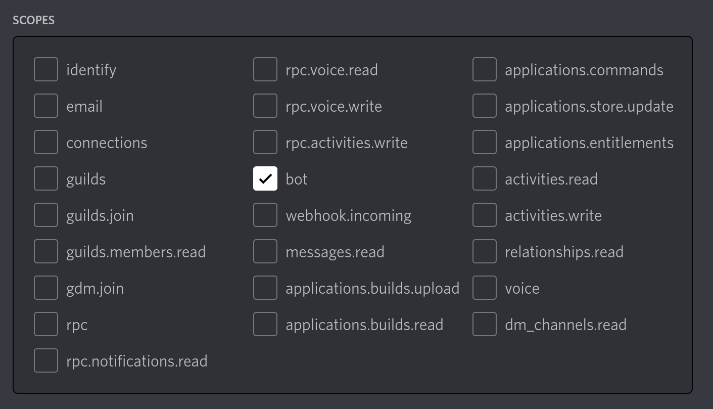
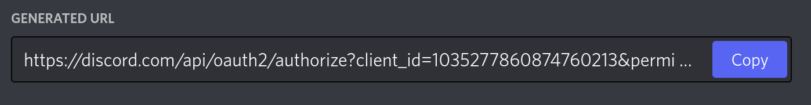
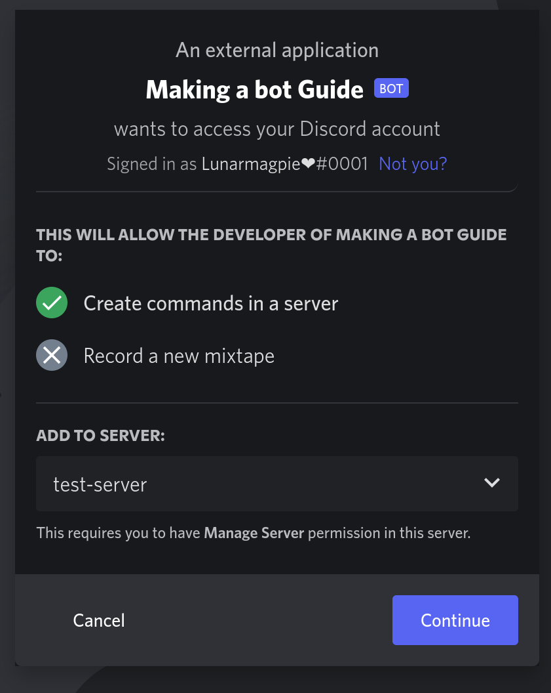

Welcome to Crescent
Crescent is a command handler for Hikari that keeps your projects neat and tidy! Crescent makes your code maintainable and readable.
You can take a look at the crescent template to get an idea of how your code will look.
Installation
Run pip install hikari-crescent in your terminal. Python 3.8 and newer is supported.
How this guide works
This guide will start by showing you basic examples of working with Crescent and creating Discord bots. You will eventually build a bot from the ground up. This guide is written for people with basic Python knowledge.
Creating a Bot
Before you can start programming, you need to create a discord bot application.
-
Navigate to The Discord Application Portal
-
Click on the blue button that says "New Application".
 -
Choose a name for your application. This doesn't matter.
-
Click on the "Bot" button.
 -
Click on the blue "Add Bot" button.
 -
Press "Yes, Do It!"
-
Press the "Reset Token" button to claim your token. You may need to enter a authentication code. Write this down and don't share it to anybody. It will give them access to your bot!
 -
Navigate to the oauth2 url generator.
 -
Select the bot scope.
 -
Scroll down and select the administrator permission. This is not required.
-
Scroll farther down to the bottom of the page. Press the copy button.
 -
Paste this URL into your web browser. You will get an invite page for your bot. Add the bot to a server you are going to develop it on.

You are now ready to build a discord bot!
Basics
This section will cover creating a bot and building your first command with Crescent.
Your first command
Before you can create a command, you need to create a bot.
import crescent
import hikari
bot = hikari.GatewayBot("YOUR_BOT_TOKEN")
client = crescent.Client(bot)
# `bot.run()` starts the bot.
# Any code after this line will not be run until the bot is closed.
bot.run()
⚠️ Storing your token in your source code is a bad idea. In later sections, we will go over how to do this properly.
The first command we will make is the ping command.
bot = hikari.GatewayBot("YOUR_BOT_TOKEN")
client = crescent.Client(bot)
# Commands can be defined after you create the client variable
# and before `bot.run()`
@client.include
@crescent.command(name="ping", description="Ping the bot.")
class PingCommand:
async def callback(self, ctx: crescent.Context) -> None:
await ctx.respond("Pong!")
bot.run()
⚠️ Commands must call
await ctx.respond()within 3 seconds or callawait ctx.defer()to get 15 minutes to respond.
So what's going on here? @crescent.command turns your class into a command object.
@bot.include adds the command to your bot. Many objects in Crescent can be added
to your bot with @bot.include, these are called Includables and we will go over
them in more detail later.
Type Hints
If you are new to Python, you may not have seen ctx: crescent.Context before. This
is called a type hint. It tells the reader what type ctx is, and your IDE can use
type hints to provide better autocomplete. Although they are not required, it is
recommended to use type hints whenever you can.
# The name of the argument The return type
# \/ \/
def my_function(argument: SomeType) -> None:
# /\
# The type of the argument
#
# The argument name and argument type
# are separated with a colon.
Adding Options
Options are added by adding class-attrs to the class.
@client.include
@crescent.command(name="say")
class SayCommand:
# The name of the command option
# \/
word = crescent.option(str)
# /\
# The type of the command option
async def callback(self, ctx: crescent.Context) -> None:
# options are accessed attributes on the class
await ctx.respond(self.word)
Crescent's option syntax is type safe. This means that commands will seamlessly work with typecheckers like mypy and pyright. (You don't need to worry about this if you are new to Python!)
Function Commands
Class commands can be cumbersome for small commands. Crescent provides function commands for those cases.
@client.include
@crescent.command
async def ping(ctx: crescent.Context):
await ctx.respond("Pong!")
It is recommended to use function commands when your command does not have any options.
User and Message commands
So far only slash commands have been covered. There is two more types of application commands: user context menu and message context menu commands. You can use these by right clicking on a user or message respectively.
Both user and message commands are only supported as functions.
@bot.include
@crescent.user_command
async def user_command(ctx: crescent.Context, user: hikari.User):
...
@bot.include
@crescent.message_command
async def message_command(ctx: crescent.Context, message: hikari.Message):
...
Command Options
As seen in the previous section, command options can be created with the crescent.option function.
This is what a command with an option called name looks like in the Discord client..

Options can also have a custom description and name. If no description is provided,
the description will default to "No Description". This example shows an option
amed "option" with the description "your custom description". The secondoption, option2,
has the name "custom-name" and description "also your custom description".
@client.include
@crescent.command
class MyCommand:
option = crescent.option(str, "your custom description")
option2 = crescent.option(str, name="custom-name", description="also your custom description")
async def callback(self, ctx: crescent.Context) -> None:
...
# The `...` is a placeholder that means that your code
# should go there instead.
Option Types
Crescent provides these option types. You can find more information on option types here (You can ignore SUBCOMMAND and SUBCOMMAND_GROUP for now.)
This might look a bit daunting, but we will go into detail on what each option type is in this section.
| Type | Option Type |
|---|---|
str | Text |
int | Integer |
bool | Boolean |
float | Number |
hikari.User | User |
hikari.Role | Role |
crescent.Mentionable | Role or User |
| Any Hikari channel type. | Channel. The options will be the channel type and its subclasses. |
List[Channel Types] | Channel. ^ |
hikari.Attachment | Attachment |
Making options optional
Options will be optional if a default value is provided. This example
shows an option with the default value None.
@client.include
@crescent.command(name="command")
class MyCommand:
optional_option = crescent.option(str, default=None)
async def callback(self, ctx: crescent.Context) -> None:
...
More Information On Types
Strings, Ints, Floats, and Booleans all use python's built in types.
If you are comfortable reading function overloads you can look at the source code.
@client.include
@crescent.command(name="command")
class MyCommand:
word = crescent.option(str)
integer = crescent.option(int)
number = crescent.option(float)
boolean = crescent.option(bool)
async def callback(self, ctx: crescent.Context) -> None:
# You can now do something with the options.
await ctx.respond(
f"{self.word}\n{self.integer}\n{self.number}\n{self.boolean}"
)
These types use a hikari object.
import hikari
@client.include
@crescent.command(name="command")
class MyCommand:
user = crescent.option(hikari.User)
role = crescent.option(hikari.Role)
attachment = crescent.option(hikari.Attachment)
# The channel type will be restricted depending on what
# channel object you choose. In this example only channels
# that users can type in can be chosen.
channel = crescent.option(hikari.TextableChannel)
# This option can only be voice channels.
voice_channel = crescent.option(hikari.GuildVoiceChannel)
async def callback(self, ctx: crescent.Context) -> None:
...
The final option type is mentionable, which allows a user to choose a user or role.
import hikari
@client.include
@crescent.command(name="command")
class MyCommand:
mentionable = crescent.option(crescent.Mentionable)
async def callback(self, ctx: crescent.Context) -> None:
if self.mentionable.user:
# This is a user. `mentionable.role` will be `None`.
await ctx.respond("You picked a user!")
if self.mentionable.role:
# This is a role. `mentionable.user` will be `None`.
await ctx.respond("You picked a role!")
Command Groups
Can commands can be grouped or grouped into groups of groups.
In Crescent these groups are called groups and sub_groups.
import crescent
# Create a group
group = crescent.Group("outer-group")
# Create a sub group
sub_group = group.sub_group("inner-group")
To add a command to a group simply do:
@client.include
@group.child
@crescent.command
async def group_command(ctx: crescent.Context):
...
@client.include
@sub_group.child
@crescent.command
async def sub_group_command(ctx: crescent.Context):
...
Do not combine the group and sub_group decorators. This will cause a command to be
registered multiple times.
Illegal Combos
You can not create a group with the same name as a command.
help_group = crescent.Group("help")
@client.include
@help_group.child
@crescent.command
async def say(ctx: crescent.Context):
...
# This command will cause the bot to crash
@client.include
@crescent.command
async def help(ctx: crescent.Context):
...
A Look Into Context
The crescent.Context object allows you to respond to interactions.
In this chapter we will look at the methods it has and using a custom context object.
Attributes
These are the only methods you will need to use on the Class class. They are all async.
Context.respond- Respond to an interaction.Context.defer- Defer a message, giving you 15 minutes to respond instead of 3 seconds.Context.edit- Edit a response to an interaction.
This is a list of useful properties on the Context class.
interactionThe interaction object.app- The application instance. (Your bot object)channel_id- The channel ID of the channel that the interaction was used in.channel- The channel that the interaction was used in, if the channel is cached.guild_id- The guild ID of the guild that this interaction was used in, if used in a guild.guild- The guild that this interaction was used in, if the guild is cached.user- The user who triggered this command interaction.member- The member object for the user that triggered this interaction, if used in a guild.
Custom Context
You may want to use a custom context class for a variety of reasons. This example shows how to use a custom context class for better typing information.
class MyBotClass(crescent.Bot):
...
class CustomContext(crescent.Context):
app: MyBotClass
async def my_command(ctx: CustomContext):
reveal_type(ctx.app) # `MyBotClass`
You can also inherit from crescent.BaseContext if you dont want any of
crescent.Context's attributes in your class.
⚠️ This is not recommended if you are new to the library.
class CustomContext(crescent.Context):
...
async def my_command(ctx: CustomContext):
reveal_type(ctx.app)
Hooks
Hooks allow you to run code before or after a command is run. They also allow you to create checks for a certain command.
This is a simple hook that says "hello there" before every command you hook it to.
async def my_hook(ctx: crescent.Context) -> None:
await ctx.respond("Hello there")
To use this hook on a command, simply do:
@client.include
@crescent.hook(my_hook)
@crescent.command
async def my_command(ctx: crescent.Context) -> None:
await ctx.respond("General Kenobi")
This command will respond "Hello there" and "General kenobi" in two different messages.
You can access command options in hooks with ctx.options. This is a dict of option name to
option value.
Using hooks as checks
You can also stop a command callback from running in a hook. Simply return crescent.HookResult(exit=True)
This is a command that uses that feature. It stops you from using the command if your name has an "L" in it.
async def no_Ls_allowed(ctx: crescent.Context) -> crescent.HookResult:
if "l" in ctx.user.username.lower():
await ctx.respond("You can't use this command!")
return crescent.HookResult(exit=True)
return crescent.HookResult()
@client.include
@crescent.hook(no_Ls_allowed)
@crescent.command
async def my_command(ctx: crescent.Context) -> None:
await ctx.respond("Hello")
Running a hook after a command
To run a hook after a command, add after=True to the decorator.
This command will return "General Kenobi" then "Hello there" in two separate messages.
async def my_hook(ctx: crescent.Context) -> None:
await ctx.respond("Hello there")
To use this hook on a command, simply do:
@client.include
@crescent.hook(my_hook, after=True)
@crescent.command
async def my_command(ctx: crescent.Context) -> None:
await ctx.respond("General Kenobi")
Adding hooks to more than commands
Bots and plugins (we will cover these later) support hooks by adding them with the
command_hooks and command_after_hooks kwargs. Hooks on the bot object will run
for all commands. Hooks on the plugin object will run for all commands in that plugin.
bot = crescent.Bot("...", command_hooks=[hook_a, hook_b])
crescent.Group and crescent.SubGroup also support hooks. Use the hooks and after_hooks
kwargs to add them. Groups and sub groups will add hooks to any commands in their respective
groups.
group = crescent.Group("group", hooks=[hook_a])
sub_group = group.sub_group("sub-group", hooks=[hook_b])
Sub groups will inherit all hooks from the group.
Hook Resolution Order
Command -> Sub Group -> Group -> Plugin -> Bot
Plugins
Plugins are used to split your bot into multiple files. Plugins require your bot to be packaged, so it is recommended to follow this structure.
working_directory/
bot/
__main__.py
plugins/
plugin_a.py
plugin_b.py
The __main__.py file is where you create your client. It would look something
like this:
import crescent
import hikari
bot = hikari.GatewayBot("YOUR_TOKEN_HERE")
client = crescent.Client(bot)
bot.run()
Now to load plugins, simply use the bot.plugins.load_folder function.
bot = hikari.GatewayBot("YOUR_TOKEN_HERE")
client = crescent.Client(bot)
client.plugins.load_folder("bot.plugins")
bot.run()
When you run your bot with python -m bot from working_directory, plugins
will be loaded on startup.
ℹ️ The path that is used to load plugins is relative to the directory you are running the bot from.
Inside a plugin file
In the inside of your plugin file you create a plugin class. You can use
@plugin.include to add a command to your bot exactly the same way you
would with @bot.include. The plugin variable must be called plugin.
plugin = crescent.Plugin[hikari.GatewayBot, None]()
@plugin.include
@crescent.command
class plugin_command:
async def callback(self, ctx: crescent.Context) -> None:
await ctx.respond("Inside a plugin")
If you need to access your bot class inside a plugin file, you can use the
plugin.app attribute. Accessing this attribute will raise an exception if
the plugin is not yet loaded.
plugin = crescent.Plugin[hikari.GatewayBot, None]()
@plugin.include
@crescent.command
class plugin_command:
async def callback(self, ctx: crescent.Context) -> None:
print(plugin.app) # <crescent.bot.Bot object at 0x????????????>
...
Hooks
Plugins allow you run to run functions when they are loaded and unloaded.
plugin = crescent.Plugin[hikari.GatewayBot, None]()
@plugin.load_hook
def load():
print("The plugin is loaded")
@plugin.unload_hook
def unload():
print("The plugin is unloaded")
Type Safe plugin.app
If you are using a inherited bot class you can change generics on crescent.Plugin so
plugin.app is typed with your class.
import typing
class MyBot(hikari.GatewayBot):
...
MyPlugin = crescent.Plugin[MyBot, None]
typing.reveal_type(MyPlugin().app) # `MyBot`
Model
Passing information between different files is hard. That's why crescent provides the model attribute. A model is any object you want that will be dependency-injected into your plugins.
import dataclasses
import hikari
import crescent
# The example model is a dataclass. This class can be whatever you want.
@dataclasses.dataclass
class Model:
value = 5
bot = hikari.GatewayBot("TOKEN")
client = crescent.Client(bot, Model())
You should also update your plugin type alias to use the model you created.
Plugin = crescent.Plugin[hikari.GatewayBot, Model]()
After the plugin is loaded, you can access your model with the model property.
# The plugin option created in the previous code block.
plugin = Plugin()
@plugin.load_hook
def on_load():
print(plugin.model)
Tips and Tricks
Objects That Need to be Created in an Async Function
Its common to have objects that need to be instatiated in an async function.
The easiest way to do this is subscribing a method on your model to hikari.StartingEvent.
class Model:
def __init__(self) -> None:
self._db: Database | None = None
async def on_start(self, _: hikari.StartedEvent) -> None:
self._db = await Database.create()
@property
def db(self) -> Database:
assert self._db
return self._db
model = Model()
bot = hikari.GatewayBot("TOKEN")
client = crescent.Client(bot, model)
bot.event_manager.subscribe(hikari.StartedEvent, model.on_start)
bot.run()
Extension Modules
Modules in the crescent.ext namespace add extra functionality to crescent
that not all users would need. The two built in modules are for rate limits
and tasks.
Cooldowns
This module allows you to rate limit users with a sliding window rate limit.
The crescent.ext.cooldowns module provides a hook.
capacityis the amount of times the command can be used in a timeframe.periodis the length of this timeframe.
import crescent
import datetime
from crescent.ext import cooldowns
@client.include
# This command be used 3 times in 20 seconds.
@crescent.hook(cooldowns.cooldown(capacity=3, period=datetime.timedelta(seconds=20)))
@crescent.command
async def cooldowned(ctx: crescent.Context):
print("Doing expensive operation...")
await ctx.respond("Hello!")
Rate Limited Hook
Callbacks can be set to run when a user is ratelimited.
async def on_rate_limited(ctx: crescent.Context, time_remaining: float) -> None:
await ctx.respond(f"You are ratelimited for {time_remaining}s.")
@client.include
@crescent.hook(cooldowns.cooldown(
1,
datetime.timedelta(minutes=1),
callback=on_rate_limited),
)
@crescent.command
async def cooldowned(ctx: crescent.Context) -> None:
print("Doing expensive operation...")
await ctx.respond("Hello!")
Custom Bucket
The default bucket uses user IDs to separate users.
This is how the default bucket is implemented:
import typing
import crescent
def default_bucket(ctx: crescent.Context) -> typing.Any:
return ctx.user.id
This is a bucket that rate limits users based on ID and guild ID:
import crescent
import typing
def custom_bucket(ctx: crescent.Context) -> typing.Any:
return f"{ctx.guild_id}{ctx.user.id}"
To use a custom bucket, pass it into the bucket kwarg.
@client.include
@crescent.hook(cooldowns.cooldown(3, datetime.timedelta(seconds=20), bucket=custom_bucket))
@crescent.command
async def cooldowned(ctx: crescent.Context):
print("Doing expensive operation...")
await ctx.respond("Hello!")
Tasks
This module allows you to loop functions on a certain time period.
Loops
Loops run a certain time period after you start the bot.
Using kwargs, functions can be set to loop after a certain amount of hours, minutes, or seconds.
from crescent.ext import tasks
from datetime import datetime
# This function runs once every minute.
@client.include
@tasks.loop(hours=0, minutes=1, seconds=0)
async def loop():
print(datetime.now())
A datetime.timedelta object can be passed in to tasks.loop for more control
over when the function loops.
from crescent.ext import tasks
from datetime import datetime, timedelta
# This function runs once every day.
@client.include
@tasks.loop(timedelta(days=1))
async def loop():
print(datetime.now())
Cronjobs
Cronjobs are supported with the tasks.cronjob function.
crontab.guru is useful for writing cron expressions.
ℹ️ croniter is used for parsing cron expressions.
from crescent.ext import tasks
from datetime import datetime
# This function runs once every minute.
@client.include
@tasks.cronjob("* * * * *")
async def loop():
print(datetime.now())
The on_startup=True can be set to force the function to run when the bot is started.
@client.include
@tasks.cronjob("* * * * *", on_startup=True)
async def loop():
print(datetime.now())